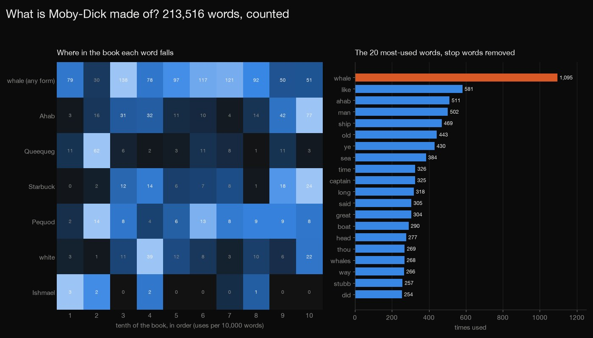
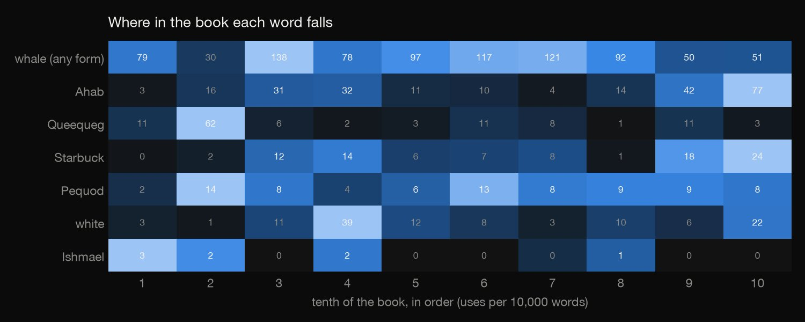
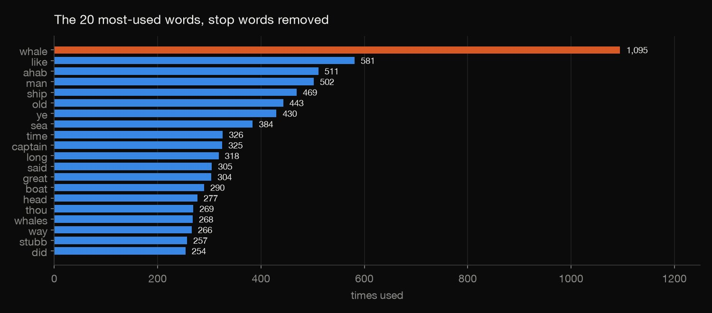
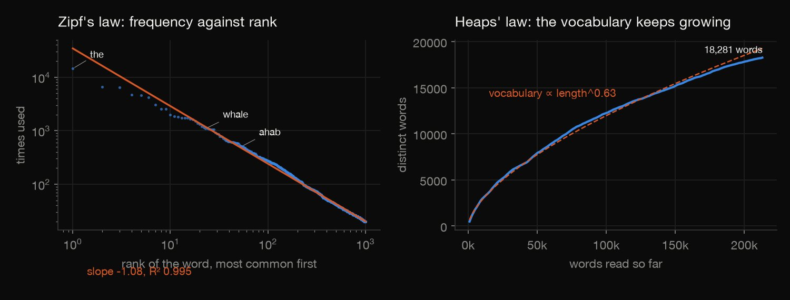
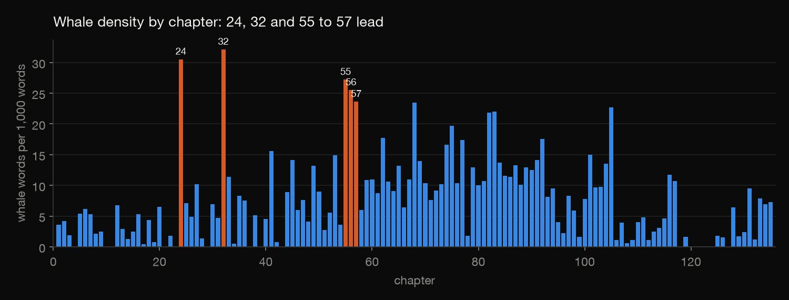

Python · Text analysis · 2026-10
What Is Moby-Dick Made Of?
Every word of Moby-Dick, counted: 213,516 words, 18,281 different ones (almost half used only once), a whale word in one word out of 117, Zipf's and Heaps' laws, and where Ahab, Queequeg and the white whale actually fall in the book.

There is no stemming: "whale" and "whales" are counted separately in the top-words list, and the whale family is found by the letters "whal". Counts depend on the edition (this is Project Gutenberg's) and on tokenising choices, which the case study shows. A tenth of the book is a tenth of its words, not a set of chapters. This is word counting, not reading.
01 — The problem
Everyone knows Moby-Dick is about a whale, and the joke is that it is also about everything else. How many words is it really, how many are whale words, and where in the book does each character show up?
Project Gutenberg publishes the full text free. The questions follow DataCamp's "Word Frequency in Classic Novels" project (take a novel from Gutenberg, clean it, count the words); this version adds two laws of language and a look at where the words fall.
02 — What I built
A cleaned, tokenised copy of the whole book, split into its 135 chapters and three extra sections, and:
- Counts: words, distinct words, words used once, and the top words with and without stop words.
- Two laws: Zipf's (frequency against rank) and Heaps' (vocabulary against length).
- Placement: whale density by chapter, and where each name falls, tenth by tenth.
- Check:
check.pyrecounts everything with different code, a character scanner instead of a regular expression: 1,527 numbers agree.
03 — How it was built
- 01
Download the text
Project Gutenberg's plain-text edition of ebook #2701, public domain in the United States. The script records the pull date and checks that the licence markers are present; the 1.3 MB text itself isn't committed.
- 02
Cut off the licence and split into chapters
The Gutenberg licence at each end isn't Melville. Then the book is split at its headings: Etymology, Extracts, 135 chapters and the Epilogue. The contents list at the start repeats every heading, so the last match of each heading is the real one.
last[m.group(2) or m.group(1).split(" ")[0].rstrip(".")] = m - 03
Decide what a word is
Lower-case; curly quotes normalised; the em dash separates words (Melville uses it without spaces); hyphenated compounds stay whole ("sperm-whale"); a trailing 's is dropped, so "whale's" counts as "whale". These choices move the numbers: splitting hyphens gives 2,554 more words but 1,267 fewer different ones.
words = re.findall(r"[a-z]+(?:['-][a-z]+)*", t) if hyphens == "keep" else re.findall(r"[a-z]+(?:'[a-z]+)*", t) - 04
Count, with and without stop words
Stop words are the little words (the, of, and, to) that swamp any count. scikit-learn's list of 318 is used, and saved with the results. With them in, "the" is 6.8% of the book; with them out, "whale" is first by a wide margin (1,095 times).
- 05
Test two laws of language
Zipf's law says a word's frequency falls in proportion to 1 over its rank, a straight line of slope −1 on log-log axes. Heaps' law says the vocabulary grows as a power of the text's length. Both are fitted by least squares.
b, a = np.polyfit(np.log10(f["rank"]), np.log10(f["count"]), 1) - 06
Place the words in the book
Whale words per 1,000 words in every chapter; seven key words in each tenth of the book (by word position, so a tenth is a tenth of the words); and the words most typical of the first third against the last third (a smoothed log ratio, for words used at least 25 times).
- 07
Recount it differently
check.pyrereads the raw text with different code: a scanner that goes through the text a character at a time instead of a regular expression, headings found line by line, and least squares written out by hand. It recounts the totals, the tokenising choices, the top words, both laws, every chapter, every tenth and the distinctive words. All 1,527 numbers agree.if "a" <= c <= "z": cur += c
04 — Results

Where the words fall. Queequeg peaks in the second tenth (61.8 uses per 10,000 words) and never passes 11.2 in a later one. Ahab is barely named in the first tenth (2.8) and peaks in the last (76.8). "White" peaks in the fourth tenth (39.3). Ishmael is named rarely, and not at all in five of the ten tenths. The first third's typical words are Bildad, Peleg, Jonah, landlord, pipe, shipmates, harpooneer and bed; the last third's are Parsee, oars, carpenter, Pip, flukes, boat and helm.

The size of it. 213,516 words in 138 sections, 18,281 different words, and 8,617 of them used exactly once: 47.1% of the vocabulary but only 4.0% of the words. Without stop words the most-used are whale (1,095), like (581), Ahab (511), man (502) and ship (469). Counting every word that contains "whal" (whale, whales, whaling, sperm-whale and so on) gives 1,819 words, 8.5 per 1,000, about one in 117.
| A word is… | Words | Different | Once |
|---|---|---|---|
| Hyphens kept | 213,516 | 18,281 | 8,617 |
| Hyphens split | 216,070 | 17,014 | 7,414 |
| 's kept | 213,516 | 18,629 | 8,857 |
Tokenising choices matter: "whale" moves from 23rd place overall to 21st when hyphens are split. The first row is used throughout.

Both laws hold. Frequency falls with rank on a log-log line of slope −1.08 (R² 0.995 over the top 1,000 words): "the" is 6.8% of all words, the top 10 words 23.9% and the top 100 51.3%. The vocabulary grows as length to the power 0.63 (R² 0.996) and never stops growing.

Whale density by chapter. Cetology (chapter 32) has 32.1 whale words per 1,000, The Advocate (24) 30.5, and the three chapters about pictures of whales (55 to 57) 27.2, 25.5 and 23.6. The Extracts at the front, a collection of quotations about whales, are at 32.1.
05 — What I'd do next
- Stem or lemmatise the words, so "whale" and "whales" count together, and compare the result with the "whal" shortcut.
- Run the same pipeline on other Gutenberg novels to see whether the Zipf slope and Heaps exponent are similar across books.
- Add dialogue detection, to see how much of the book is talk and how that changes toward the end.